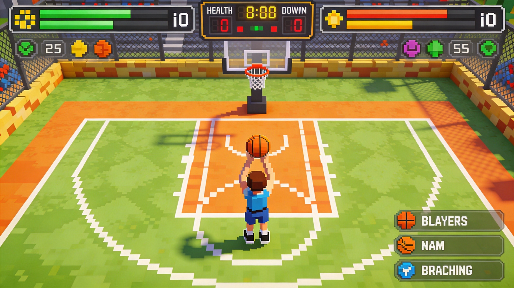
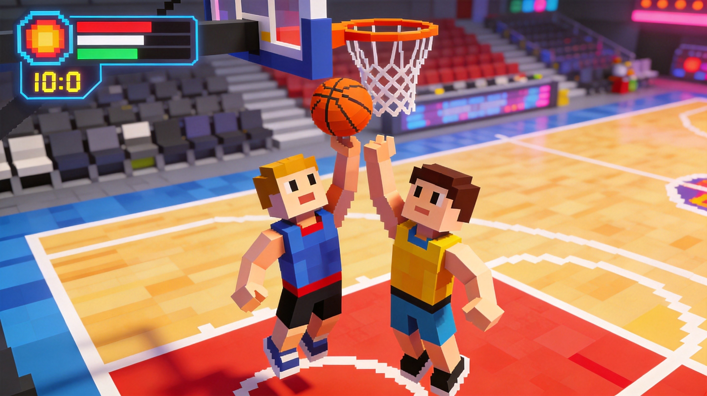
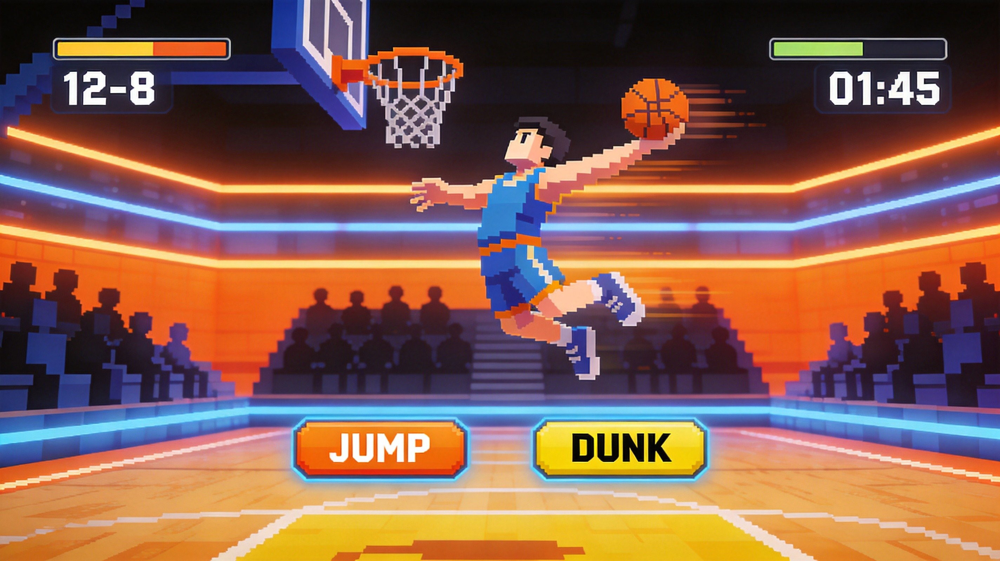

Introduction
BasketBros.io is a fast-paced, browser-based arcade basketball game developed by Blue Wizard Digital LP that strips away complex mechanics to deliver pure, high-energy 1v1 and 2v2 action. What makes it unique is its incredibly responsive controls and physics-based gameplay, where timing and positioning matter more than complicated playbooks. Players love it for its instant accessibility, friendly street-match vibe, and the thrill of clutch plays. Whether you are dominating the hoop in a quick online match, grinding through the 17-game Franchise Mode, or challenging a friend on the same keyboard, the game offers smooth, rewarding matches. With its simple yet deep skill ceiling, colorful characters, and dynamic courts, BasketBros.io provides an addictive competitive experience that keeps every single point exciting and unpredictable.
Getting Started

Starting your journey in BasketBros.io is seamless since it runs directly in your browser with no downloads required. Begin by selecting a game mode: Play Now for a quick 1v1 AI match, Online Play to host or join via a shared code, or 2 Players to challenge a friend on the same keyboard. For Player 1, use the Left and Right arrow keys to move, Up to jump and shoot, Down to slide or duck, and K for your special move. Player 2 uses A/D to move, W to jump, S to slide, and F for specials. Your primary objective is to outscore your opponent by shooting, dunking, and defending your hoop. Initially, focus on the Shooting Practice mode to get a feel for the jump arcs and timing. Mastering the basic mechanics involves learning when to jump for rebounds, how to time your shots for maximum accuracy, and using the slide to dodge defenders. Once the controls feel like second nature, you are ready to hit the online courts.
Basic Tips
To dominate the court as a beginner, focus on these essential tips. First, master your shot timing; do not just mash the jump key. Wait for the defender to commit, then jump and shoot at the peak of your arc for better accuracy. Second, use the slide defensively to steal the ball or block low shots without fouling or losing your positioning. Third, always box out for rebounds. When a shot goes up, position your player between the opponent and the hoop, and time your jump to grab the ball before they do. Fourth, utilize your special move strategically rather than spamming it. Use it to break through a tight defense or execute a sudden, unpredictable dunk when you are close to the rim. Finally, control the pace. If you are losing, slow down the game by using the slide to evade pressure and reset your offense instead of rushing into a contested shot.
Advanced Strategies

For experienced players, elevating your gameplay requires advanced spatial awareness and mind games. First, implement the pump fake strategy. Jump once to force the defender to commit to a block, then quickly land and jump again for an uncontested layup or dunk. Second, master the slide-dunk combo. While driving to the hoop, slide under a jumping defender's block attempt, then immediately transition into a jump and special move for an unstoppable dunk. Third, exploit court positioning by playing the angles. Instead of taking straight-on shots, use the left and right boundaries to create sharper angles, making it mathematically harder for the opponent to contest your shot or block the rebound. Fourth, in 2v2 modes, establish a clear pick-and-roll dynamic. Have one player set a screen using the slide or body positioning to free up the ball handler for a clean jump shot, forcing the defenders to switch and creating mismatches.
Pro Tips

Great players separate themselves through micro-mechanics and psychological pressure. First, utilize micro-jukes by rapidly tapping left and right just before a shot to completely freeze the opponent's reaction time. Second, master the rebound reset. Instead of just grabbing the ball, immediately pass or reposition mid-air to avoid being stripped upon landing. Third, weaponize your special move's cooldown. Feint the special by moving aggressively, forcing the opponent to panic-jump, then use a standard shot to score. Finally, in online matches, learn to read your opponent's latency. If they are slightly delayed, bait them into jumping early with a pump fake, exploiting the lag to secure an easy dunk.
Conclusion
BasketBros.io perfectly captures the thrill of arcade street basketball with its lightning-fast matches, highly responsive mechanics, and addictive competitive loop. Whether you are grinding the 17-game Franchise Mode, practicing your shot timing, or battling friends online, the game offers endless replayability. Jump into your browser, master the controls, and start dominating the court today!